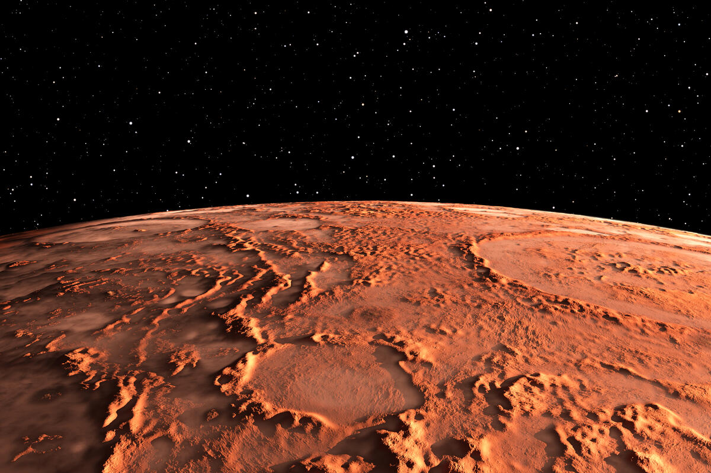
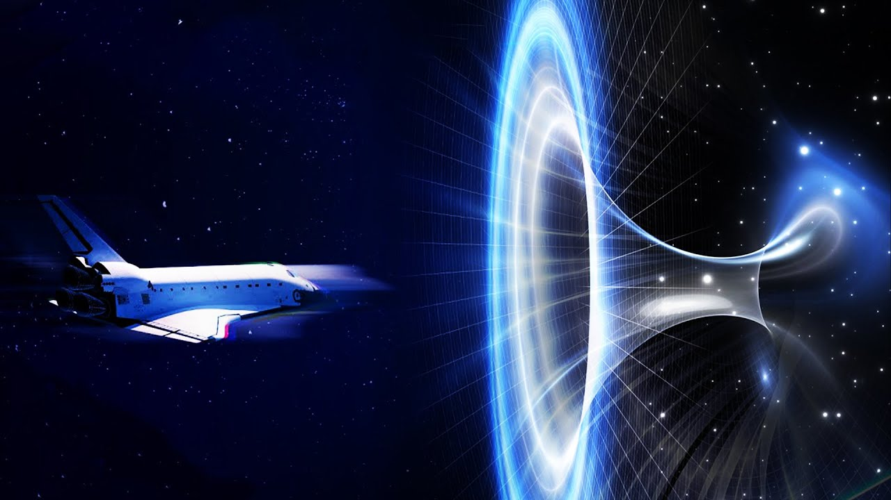
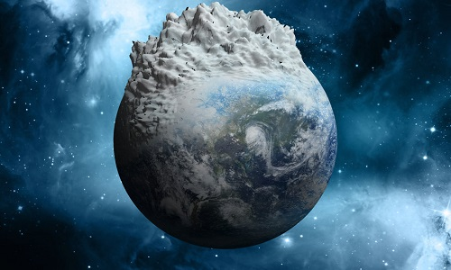

Milanković se od 1911. godine počeo zanimati za klimatologiju. Proučavajući naučne radove savremenog klimatologa Julijusa fon Hana, Milanković je uočio značajno pitanje koje će postati jedno od glavnih oblasti njegovog naučnog istraživanja: misterija ledenog doba.
Kosmički mehanizam nije bio lak problem i Milankoviću je trebatlo više od dve decenije za usavršavanje ove teorije.

Temperatura Marsa
Koristeći matematički metod radio je na proučavanju sadašnjih klima planeta unutrašnjeg Sunčevog sistema. 1916. godine objavio
je rad pod nazivom Ispitivanje klime planete Mars. Izračunao je da je prosečna temperatura u donjim slojevima Marsove
atmosfere −45 °C (−49 °F) i prosečna temperatura tla −17 °C (1 °F). Takođe je zaključio sledeće: „Ova velika razlika između
temperature tla i donjeg sloja atmosfere nije neočekivana. Velika prozirnost Marsove atmosfere za Sunčeve zrake čini da je
Marsova klima veoma slična visinskoj klimi naše Zemlje, koja se takođe odlikuje visokim temperaturama tla, a niskim
temperaturama vazduha.”

Brzina svetlosti
Milanković je objavio dva rada o relativnosti. Prvi rad „O teoriji Majkelsonovog eksperimenta” objavio je 1912. godine. Radio je istraživanja o ovoj teoriji i 1924. godine.
U svetlu Majkelsonovog eksperimenta diskutovao je o validnosti drugog postulata Specijalne teorije relativnosti, da je brzina svetlosti ista u svim referentnim sistemima. Do svoje smrti, ostao je ubeđen da brzina svetlosti u kosmičkim prostorima ne može biti konstantna.
Zanimljivo da se na prelazu iz 20. u 21. vek u nauci sve više navodi pojam varijabilna (promenljiva) brzina svetlosti.

Orbitalne varijacije i ciklusi ledenih doba
Milankovićevi radovi na astronomskom objašnjenju ledenih doba, pogotovo njegova kriva osunčavanja za proteklih 130.000 godina, dobili su podršku od klimatologa Vladimira Kepena i geofizičara Alfreda Vegenera.
Milanković je dobio poziv od Vladimira Kepena, koji je zatražio da proširi svoje proračune sa 130.000 godina do 600.000 godina. Njih dvojica su se složila da su hladna leta ključna za rešavanje misterije.
Nakon usavršavanja matematičke mašinerije koja je bila sposobna da proračuna osunčavanje bilo kog datog uporednika i za bilo koje godišnje doba, Milanković je bio spreman da započne matematički opis klime Zemlje u prošlosti.
Proveo je 100 dana radeći proračune i pripremajući dijagram promena Sunčevog zračenja na severnim uporednicima polulopte
(55°, 60° i 65°) za prošlih 650.000 godina. Milanković je verovao da su ovi uporednici najosetljiviji na promene toplotne
ravnoteže na Zemlji.